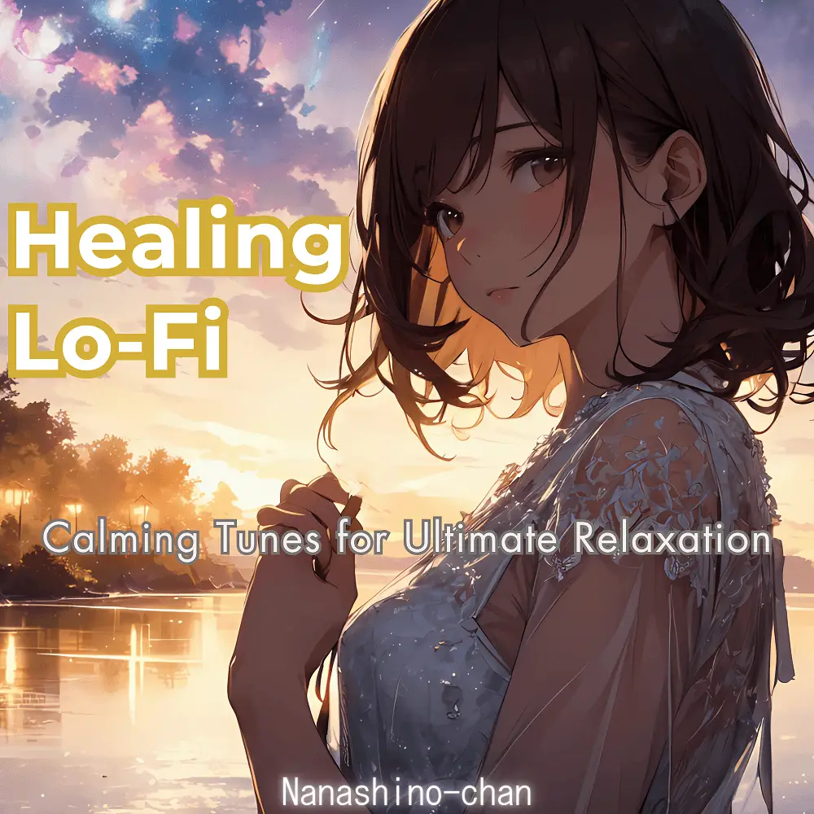

Lo-Fi · Ambient · Instrumental
Serene Lo-Fi Journeys: A Healing Soundscape
Nanashino-chan
Nanashino-chanの「Serene Lo-Fi Journeys: A Healing Soundscape」。Lo-Fi / Ambient / Instrumentalを楽しめる全19曲のインストゥルメンタル作品です。「Gentle Breez / Evening Dew」などを収録。気になる曲を試聴して、配信サービスでお気に入りを見つけてください。
2025-02-18 リリース · 19 曲 · Instrumental
アルバムを試聴
気になる音楽を、ここから。
曲を選ぶまでジャケットを表示します。試聴にはYouTubeを使用します。
YOUTUBE PREVIEW
試聴する曲を選んでください
曲を選ぶまでジャケットを表示します。試聴にはYouTubeを使用します。
再生できない場合は、配信サービスでアルバムや曲を開いてください。
配信サービスでアルバムを探す
「検索」のリンクは検索結果を開きます。サービス内でアルバムや曲を選択してください。
収録曲一覧 19
- 01Gentle Breez
- 02Evening Dew
- 03Serenity in Bloom
- 04Tranquil Pathways
- 05Whispering Pines
- 06Calm Reflections
- 07Gentle Ripples
- 08Peaceful Horizons
- 09Sunlit Meadows
- 10Soft Whispers
- 11Healing Waters
- 12Quiet Moments
- 13Restful Dreams
- 14Twilight Glow
- 15Moonlit Reflections
- 16Starlit Serenity
- 17Celestial Calm
- 18Dreamy Solitude
- 19Eternal Stillness
SNSで使いたい音源を探す
「Nanashino-chan ＋ 曲名」をコピーして、SNSアプリの音源検索に貼り付けてください。音源の表示は地域やアカウントにより異なります。コピー機能は利用許諾を付与するものではありません。